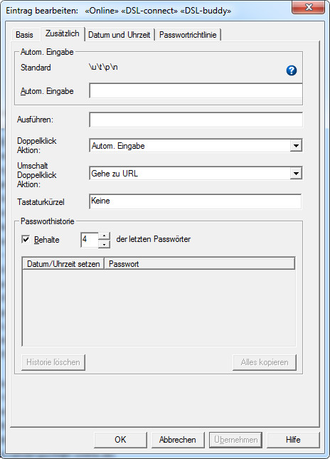

In Password Safe können Sie die letzten paar Passwörter eines Eintrages zusammen mit dem
Datum festhalten, an welchem die Passwörter gesetzt wurden. Dies ist nützlich, um eine
Übereinstimmung des Passwortes mit den an einigen Stellen eingesetzten Passwortrichtlinien
nachzuweisen, oder um ein Passwort auf eine ältere Version zurückzuschalten, wenn das neue
Passwort (warum auch immer) nicht funktioniert. Die Passworthistorie kann im Reiter
"Zusätzlich" im Dialogfenster Eintrag bearbeiten erreicht
werden.

Dieser Dialog stellt die letzten paar Passwörter für den jeweiligen Eintrag da. Um dies
anzuzeigen drücken Sie auf die Taste "Passworthistorie" im Eintrag bearbeiten/Einfügen
Dialog. Folgendes kann gemacht werden:
Die N letzten Passwörter behalten
Wenn markiert, werden zu diesem Eintrag die angegebene Anzahl an letzten Passwörtern
abgespeichert. Die spezifische Anzahl für diesen einen Eintrag kann hiermit festgelegt
werden. Hinweis: Wenn Sie die Markierung aufheben, wird die Historie nicht
gelöscht. Es wird lediglich die weitere Abspeicherung von Passwörtern in Password Safe
für diesen Eintrag angehalten.
Passwort kopieren
Wenn Sie auf eine Zeile in der Liste der letzten Passwörter klicken, wird das Passwort aus
dieser Zeile in die Zwischenablage kopiert.
Historie löschen
Wenn Sie auf diese Taste drücken, wird die gesamte Passworthistorie dieses Eintrages gelöscht.
Wenn keine Historie vorhanden ist, ist die Taste deaktiviert (ausgegraut).
Hinweis: Der Eintrag wird erst zum Zeitpunkt, wann Sie 'OK' in "Eintrag
bearbeiten/einfügen" Dialog drücken, geändert werden. Wenn Sie versehentlich auf "Historie
löschen" gedrückt haben, drücken Sie nicht auf 'OK' sondern auf 'Abbrechen'.
Alles kopieren
Wenn Sie diese Taste drücken wird die gesamte Historie dieses Eintrages mit Datum und Passwort
in die Zwischenablage kopiert.